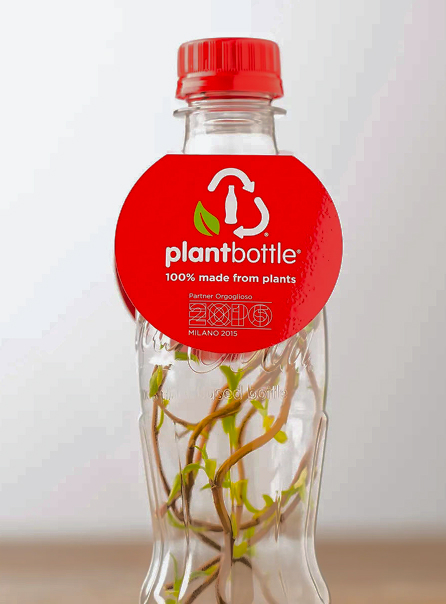

Nuove esigenze consapevoli.
Nel XXI secolo, la crescente consapevolezza riguardo ai cambiamenti climatici e all’inquinamento da plastica ha spinto la The Coca-Cola Company a ripensare in modo significativo i propri materiali di imballaggio. La plastica tradizionale, pur offrendo numerosi vantaggi in termini di praticità ed efficienza, dipendeva in larga parte da risorse fossili come il petrolio, sollevando preoccupazioni ambientali sempre più pressanti. In questo contesto, l’azienda ha iniziato a investire nello sviluppo di alternative sostenibili, con l’obiettivo di ridurre l’impatto ambientale senza compromettere la qualità e le prestazioni del packaging.
Nel 2009 venne introdotta la PlantBottle, una bottiglia innovativa realizzata fino al 30% con materiali di origine vegetale, principalmente derivati dalla canna da zucchero. Questa soluzione rappresentava un importante passo avanti, poiché manteneva le stesse proprietà tecniche del PET tradizionale come resistenza, trasparenza e capacità di conservazione riducendo al contempo l’utilizzo di materie prime fossili. La PlantBottle dimostrò come fosse possibile combinare innovazione tecnologica e sostenibilità, senza sacrificare le esigenze produttive e commerciali.

2009, Danimarca.